Released on June 9, 2010
(Next Release on June 16, 2010)
Projected Impact of the 2010 Hurricane Season on
Crude Oil Production in the Gulf of Mexico
It is difficult to forecast the impact of severe tropical weather in the Gulf of Mexico region on crude oil production, because shut-in production in any particular year varies depending on the overall level of severe weather and the specific track of each storm (see Figure 1). The 2008 and 2009 hurricane seasons illustrate a wide range of oil production impacts. In September of 2008, disruptions caused by Hurricanes Gustav and Ike led to cumulative seasonal production outages of 65 million barrels of crude oil. In contrast, during the 2009 season, only one Category 2 hurricane threatened the producing areas, causing a seasonal outage of only about 3 million barrels.
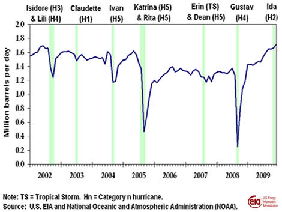
The National Oceanic and Atmospheric Administration’s (NOAA) Atlantic Hurricane Season Outlook, released on May 27, 2010, predicts that the Atlantic basin will likely experience above-normal tropical weather activity during the hurricane season (June 1 – November 30). NOAA projects 14 to 23 named storms will form within the Atlantic Basin over the next 6 months, including 8 to 14 hurricanes, of which 3 to 7 hurricanes will be intense.
In a supplement to the June edition of the Short-Term Energy Outlook (2010 Outlook for Hurricane-Related Production Outages in the Gulf of Mexico), EIA simulated the probability distribution for seasonal shut-in crude oil production in the Gulf of Mexico using information from the NOAA hurricane projections. The median outcome from the probability distribution indicates that a total of 26 million barrels could be shut in over the course of the entire 2010 hurricane season. This projection contrasts with an estimated median cumulative outage of 5.8 million barrels during a season with normal hurricane activity. Actual outages are likely to differ significantly from this expectation depending on the number, track, and strength of hurricanes as the season progresses. The likelihood of experiencing disruptions similar to the 2008 hurricane season (outages of 65 million barrels) or worse is estimated to be 17 percent during the upcoming season, which is quite a bit higher than the probability expected during a normal season (5 percent).
Over the past 100 years, tropical storms have formed within the Gulf of Mexico as early as May and as late as December (see Figure 2). Hurricanes, which usually cause the largest disruptions to offshore production, occur most frequently during the months of August and September.
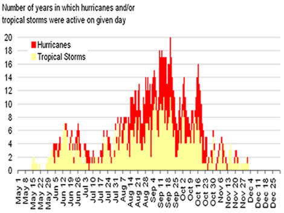
Notes: The Gulf of Mexico is defined here as the area bounded by
18o N – 31o N latitude and 81o W – 98o W longitude.
Source: EIA calculations using NOAA's Hurdat database.
Gasoline and Diesel Prices Decrease
Although the U.S. average price for regular gasoline continued to weaken, the price slipped less than half a cent, remaining essentially unchanged at $2.73 per gallon. The price was a dime higher than last year at this time. Price changes were mixed, with the East Coast seeing the largest regional decrease, of nearly four cents, to $2.69 per gallon. The averages on the Gulf Coast and in the Rocky Mountains declined about three cents to $2.61 per gallon and $2.79 per gallon, respectively. Moving up three and a half cents, the average in the Midwest reached $2.66 per gallon. The West Coast price rose three cents to $3.01 per gallon, while the average in California increased over four cents to settle at $3.07 per gallon.
The national average for diesel fuel fell for the fourth week in a row, dropping three cents to $2.95 per gallon but was $0.45 above the price a year ago. The cumulative drop for the four weeks amounted to $0.18 per gallon. Prices fell in all regions of the country, as the East Coast dipped over three cents to $2.97 per gallon. The averages in the Midwest, on the Gulf Coast, and in the Rocky Mountains each dropped roughly four cents to $2.90 per gallon, $2.90 per gallon, and $3.02 per gallon, respectively. The average on the West Coast slid two cents to $3.06 per gallon and the California price fell less than three cents to $3.07 per gallon.
Propane Stocks Build Again
Total U.S. inventories of propane continued their ascent last week, climbing by 1.2 million barrels to end at 42.9 million barrels, a level that continues to track in the upper half of the average range for this time of year. The Midwest region tallied the largest build of 0.8 million barrels of propane. The Gulf Coast region and the Rocky Mountain/West Coast region each grew by 0.2 million barrels, while the East Coast region was up only slightly. Propylene non-fuel use inventories increased their share of total propane/propylene stocks from 7.8 percent to 7.9 percent.
Text from the previous editions of “This Week In Petroleum” is accessible through a link at the top right-hand corner of this page.
| Retail Prices (Cents Per Gallon) | |||||||
| 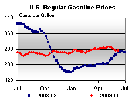 | 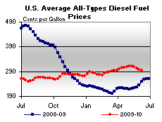 | ||||||
| Retail Data | Changes From | Retail Data | Changes From | ||||
| 06/07/10 | Week | Year | 06/07/10 | Week | Year | ||
| Gasoline | 272.5 | Diesel Fuel | 294.6 | ||||
| Spot Prices (Cents Per Gallon*) | |||||||||||||||||||||||||||||||||||
| 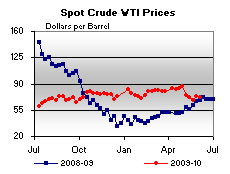 | 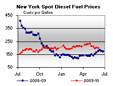 | ||||||||||||||||||||||||||||||||||
| 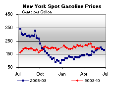 | 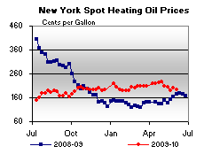 | ||||||||||||||||||||||||||||||||||
|
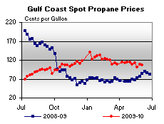 | ||||||||||||||||||||||||||||||||||
| *Note: Crude Oil WTI Price in Dollars per Barrel. | |||||||||||||||||||||||||||||||||||
| Stocks (Million Barrels) | |||||||
| 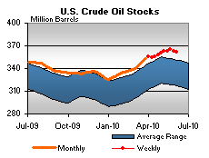 | 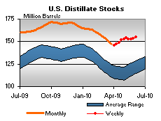 | ||||||
| 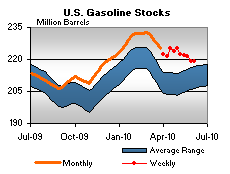 | 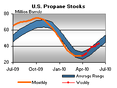 | ||||||
| Stocks Data | Changes From | Stocks Data | Changes From | ||||
| 06/04/10 | Week | Year | 06/04/10 | Week | Year | ||
| Crude Oil | 361.4 | Distillate | 154.8 | ||||
| Gasoline | 219.0 | Propane | 42.894 | ||||